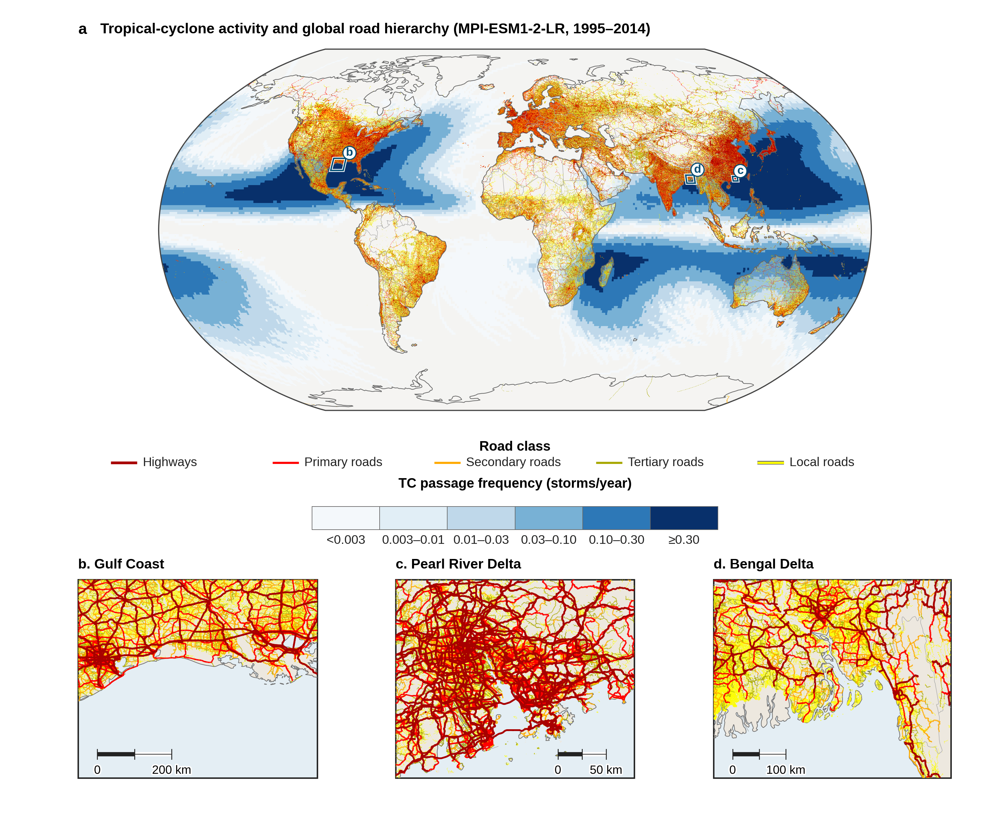
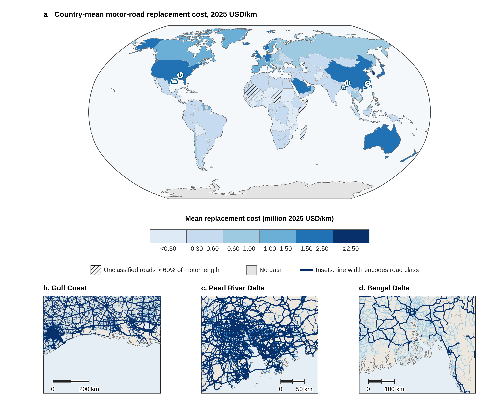
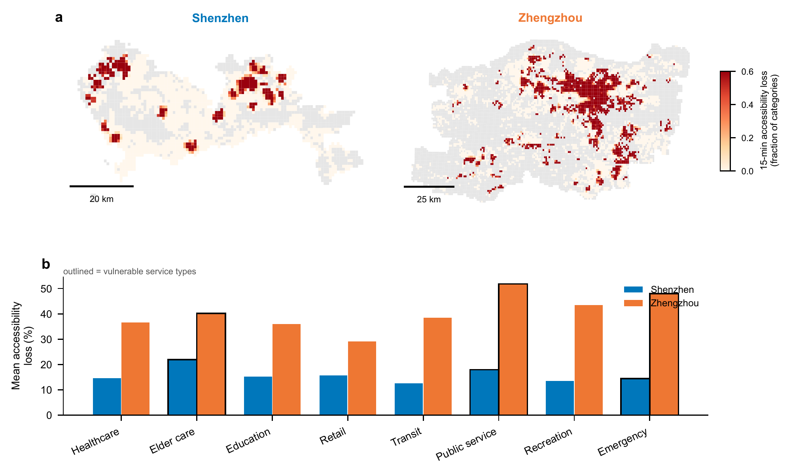

Peking University北京大学
M.Sc. in Territorial Spatial Planning国土空间规划专业 · 硕士研究生
GPA: 3.84 / 4.0GPA：3.84 / 4.0
Shenzhen, China中国深圳
Sep 2024 – Present2024年9月—至今
I am a master’s student in Territorial Spatial Planning at the School of Urban Planning and Design, Peking University, advised by Dr. Junqing Tang. I received my bachelor’s degree in Urban Management from Nankai University and was an exchange student in Urban Studies at the University of Glasgow.我目前在北京大学城市规划与设计学院攻读国土空间规划专业硕士学位，导师为汤俊卿博士。此前，我在南开大学获得城市管理专业管理学学士学位，并曾赴英国格拉斯哥大学城市研究专业交流学习。
My research examines the coupled relationships between human activity, urban space, and disaster risk. I investigate how hazards interact with infrastructure, service provision, and everyday mobility to shape urban resilience. My ongoing studies address this question across scales: physical road damage and commuting disruption under compound tropical cyclone wind and rainfall hazards globally; healthcare supply and older-population exposure across coastal cities; and 15-minute access to everyday services in flood-affected communities.我的研究围绕人类活动—城市空间—灾害风险的耦合关系展开，探究灾害如何与基础设施、服务供给及日常移动相互作用，共同塑造城市韧性。我从不同尺度回答这一问题：全球尺度上，研究热带气旋风雨复合灾害下的道路实体资产损失与通勤 OD 影响；城市尺度上，分析沿海城市的医疗服务供给与老年人口受灾风险；社区尺度上，考察洪水情境下的15分钟日常服务可达性。
Alongside these studies, I explore the theoretical foundations of human–environment–disaster relationships and develop models for compound hazards, including StormTailor. My broader interests lie in combining physically based simulation, probabilistic risk modeling, and GeoAI to connect hazard processes with infrastructure dynamics and human responses. I aim to use this understanding to inform climate adaptation, infrastructure planning, and emergency decision-making.在实证研究之外，我也开展“人—地—灾”关系的理论探索，并开发 StormTailor 等复合灾害模型。我希望结合基于物理过程的模拟、概率风险建模与地理空间人工智能（GeoAI），连接致灾过程、基础设施动态与人群响应，为气候适应、基础设施规划和应急决策提供依据。
M.Sc. in Territorial Spatial Planning国土空间规划专业 · 硕士研究生
GPA: 3.84 / 4.0GPA：3.84 / 4.0
Shenzhen, China中国深圳
Sep 2024 – Present2024年9月—至今
B.Mgmt. in Urban Management城市管理专业 · 管理学学士
GPA: 3.85 / 4.0GPA：3.85 / 4.0
Tianjin, China中国天津
Sep 2020 – Jun 20242020年9月—2024年6月
Exchange Student in Urban Studies城市研究专业 · 交流学生
GPA: 18.3 / 22.0 · First-ClassGPA：18.3 / 22.0 · First-Class
Glasgow, United Kingdom英国格拉斯哥
Sep 2022 – Jun 20232022年9月—2023年6月
Progress in Geography地理科学进展 · 2026 · 45(4), 683–694 · In Chinese · 45(4), 683–694
Nature SustainabilityNature Sustainability · 2026
Transport PolicyTransport Policy · 2026 · 180, 104029 · 180, 104029
Journal of Geo-information Science地球信息科学学报 · 2025 · 27(3), 553–569 · In Chinese · 27(3), 553–569
Journal of Catastrophology灾害学 · 2024 · 39(4), 125–130 · In Chinese · 39(4), 125–130
Resilient Cities under Global Climate Change: From Principles to ApplicationsResilient Cities under Global Climate Change: From Principles to Applications · 2026 · Chapter 11 · Edward Elgar Publishing · 第11章 · Edward Elgar Publishing
Acta Geographica Sinica地理学报 · 2026 · In Chinese · Under review审稿中
Journal of Transport GeographyJournal of Transport Geography · 2026 · Major revision大修
Journal of Natural Disasters自然灾害学报 · 2026 · In Chinese · Minor revision小修
I investigate how tropical cyclone winds and rainfall affect road assets and the urban commuting networks they support. This ongoing study links global road inventories and physical hazard models with synthetic origin–destination flows to examine asset damage, disconnected journeys, and changes in travel routes across cities. It asks when and why physical damage and transport disruption diverge.我研究热带气旋风雨灾害如何影响道路实体资产及其承载的城市通勤网络，将全球道路资产清单、物理灾害模型与合成通勤 OD 相连接，分析资产损失、出行不可达及路径变化，探究实体损失与交通功能受损在何种条件下呈现不同的空间格局。
Global infrastructure and urban networks · Ongoing research全球基础设施与城市网络 · 在研


I assess how tropical cyclone wind exposure, potential hospital asset losses, and healthcare provision align across 52 Chinese coastal cities. By combining reconstructed wind fields, historical and synthetic cyclone tracks, and spatial population and hospital data, I identify mismatches between exposed older populations and the medical resources available to support them, and examine how these pressures change under future scenarios.我在中国52个沿海城市分析热带气旋大风暴露、医院资产潜在损失与医疗服务供给的匹配关系，结合重建风场、历史与合成热带气旋路径、人口空间分布和医院数据，识别老年人口暴露与医疗资源支撑之间的错配，并考察未来情景下这些压力的变化。
City-scale risk assessment · First-author manuscript under review城市尺度风险评估 · 第一作者论文在审
I investigate how the spatial distribution of everyday services, flood-induced network disruption, and human mobility jointly shape neighborhood access. Comparing Shenzhen and Zhengzhou, I combine pedestrian-network accessibility models with mobile-phone origin–destination data to distinguish potential access losses from observed changes in arrivals at service-containing neighborhoods.我关注日常服务的空间配置、洪水造成的路网中断与人群移动如何共同塑造社区可达性。以深圳和郑州为案例，我结合步行网络可达性模型与手机信令 OD 数据，区分模型预测的潜在可达性损失与包含服务设施的社区实际到达量变化。
Neighborhood accessibility and observed mobility · In preparation社区可达性与观测移动 · 准备中

I explore the geographical foundations of urban resilience by treating disaster risk as an endogenous constraint on human–environment relationships. This theoretical work examines how human activities, environmental endowments, and disaster impacts interact, and uses the 2021 Zhengzhou flood to discuss how adaptation and risk constraints reshape urban systems.我从地理学视角探索城市韧性的理论基础，将灾害风险视为人地关系演化的内生约束，分析人类活动、环境禀赋与灾害影响之间的相互作用，并结合2021年郑州洪灾，讨论适应行为与风险约束如何共同塑造城市系统。
Theoretical research · Published in Progress in Geography理论研究 · 已发表于《地理科学进展》


I am developing StormTailor to connect physically based synthetic tropical cyclones with regional wind and rainfall hazards. The project explores how compound extremes can be defined and their probabilities estimated within a consistent modeling framework, combining storm dynamics, hazard simulation, and probabilistic inference.我正在开发 StormTailor，将基于物理过程的合成热带气旋与区域风雨危险性建模连接起来。该研究结合风暴动力学、灾害模拟与概率推断，探索如何在一致的模型框架中定义复合极端并估计其发生概率。
Hazard modeling and model development · Work in progress危险性建模与模型开发 · 在研
My related research includes reconstructing Typhoon Mangkhut’s wind–rain evolution and analyzing mobile-phone records to examine spatial differences in urban response. I have also worked on flood-related shelter demand–supply mismatches across 21 cities, an interactive spatial decision system for emergency resource allocation, and dynamic Bayesian network–ARIMA modeling of resilience trajectories across nine Pearl River Delta cities.相关研究还包括重建台风“山竹”的风雨演变过程，并利用手机信令数据分析城市响应的空间差异；识别21个城市的洪涝避难场所供需错配，开发应急资源配置交互式空间决策系统；以及结合动态贝叶斯网络与 ARIMA，研究珠三角9个城市的韧性演变轨迹。
Collaborative research at Peking University北京大学合作研究
Oral presentation · 13th International Conference on Population Geographies · Nanjing, China口头报告 · 第十三届人口地理学国际会议 · 中国南京
Jun 20262026年6月
Oral presentation · Spring Annual Meeting of the Geographical Society of China · Chongqing, China口头报告 · 中国地理学会春季年会 · 中国重庆
Apr 20262026年4月
Committee Member, Sub-Society for Postgraduate Students, Geographical Society of China中国地理学会研究生联合分会委员
2025 – Present2025年—至今
First Prize, 10th Chengyuan Cup Planning Decision Support Model Design Competition第十届城垣杯规划决策支持模型设计大赛一等奖
20262026
Second Prize, Peking University Academic Science & Technology Competition北京大学学术科技竞赛二等奖
20262026
Second Prize, Peking University Academic Science & Technology Competition北京大学学术科技竞赛二等奖
20252025
Third Prize, Esri Cup China University GIS Software Development ContestEsri杯中国高校GIS软件开发竞赛三等奖
20252025
National Second Prize, Undergraduate Innovation & Entrepreneurship Training Program大学生创新创业训练计划国家级二等奖
20242024
Outstanding Undergraduate Thesis, Nankai University南开大学优秀本科毕业论文
20242024
Outstanding Graduate, Nankai University南开大学优秀毕业生
20242024
Huadan Scholarship in Political Science, Nankai University南开大学华旦政治学奖学金
20242024
First-Class Scholarship, Nankai University南开大学一等奖学金
20232023
Tianjin Municipal Government Scholarship天津市人民政府奖学金
20222022
First-Class Scholarship, Nankai University南开大学一等奖学金
20212021
Programming & web development编程与网页开发Python (NumPy, pandas, GeoPandas, Rasterio, xarray, scikit-learn) · JavaScript · HTML/CSSPython（NumPy、pandas、GeoPandas、Rasterio、xarray、scikit-learn）· JavaScript · HTML/CSS
GIS & modelingGIS与建模ArcGIS · GeoScene Pro · QGIS · CLIMADA · GeNIe ModelerArcGIS · GeoScene Pro · QGIS · CLIMADA · GeNIe Modeler
Development & typesetting开发与排版Git/GitHub · LaTeXGit/GitHub · LaTeX